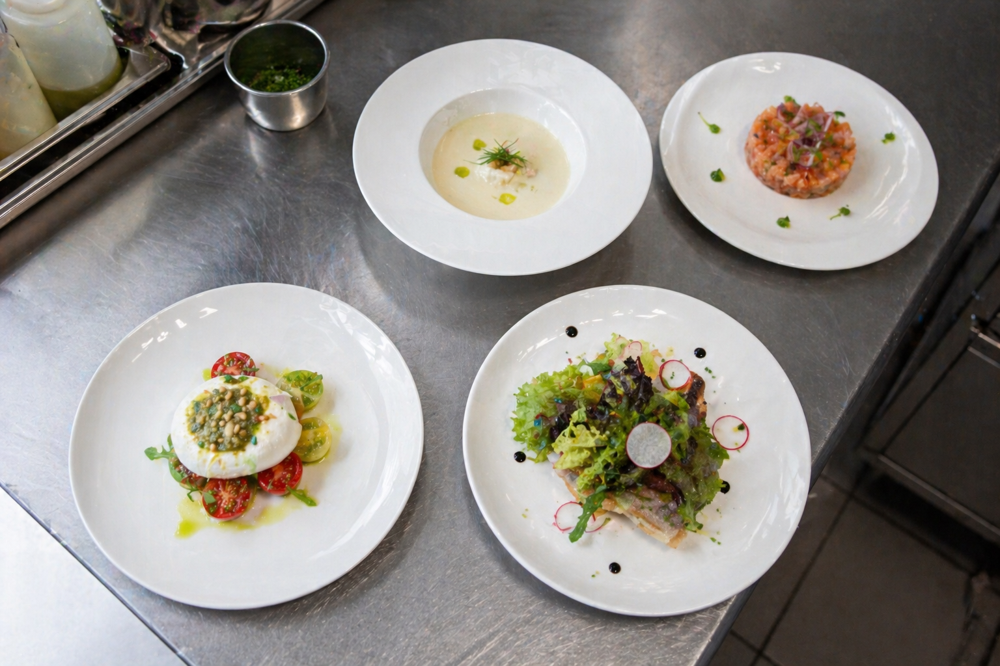
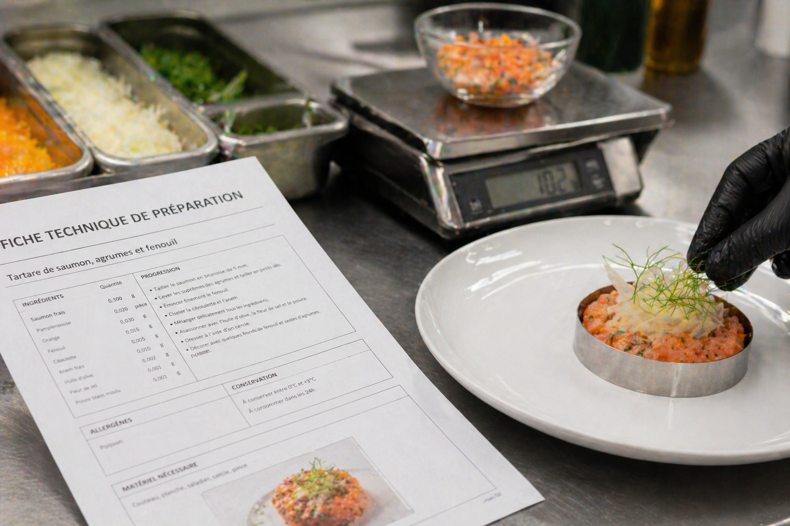

Fiches techniques entrées : 3 recettes professionnelles complètes avec coût de revient et food cost
Les entrées représentent 15 à 25 % du chiffre d'affaires d'un restaurant traditionnel, mais elles sont souvent les grandes oubliées des fiches techniques. Résultat : des portions au jugé, un food cost inconnu et une marge qui s'évapore. Ce guide vous donne la méthode complète pour standardiser vos entrées — avec trois fiches techniques détaillées, chiffrées et prêtes à adapter à votre carte.

Pourquoi standardiser vos entrées avec des fiches techniques ?
Les entrées sont le poste de la carte le plus exposé aux variations de coût — et le moins standardisé dans la majorité des restaurants. Trois raisons expliquent cette vulnérabilité :
- La variété saisonnière. Contrairement à un steak ou un filet de poisson dont le prix est relativement stable, les légumes, fruits et herbes fraîches qui composent les entrées subissent des variations de prix de 30 à 80 % entre la pleine saison et le hors-saison. Sans fiche technique mise à jour, le food cost dérive sans que personne ne s'en aperçoive.
- La préparation anticipée vs minute. Certaines entrées (terrines, marinades, veloutés) se préparent en grande quantité et se portionnent au service. D'autres (tartares, salades) s'assemblent à la minute. Sans grammages précis, l'écart entre la portion théorique et la portion réelle peut atteindre 20 à 30 % — c'est autant de marge qui disparaît.
- Le coût des finitions. Huile de truffe, copeaux de parmesan, noisettes torréfiées, herbes micro-pousses : les éléments de dressage et d'assaisonnement des entrées représentent souvent 15 à 25 % du coût total de la recette. Les oublier dans la fiche technique, c'est sous-estimer systématiquement le coût de revient.
Les entrées représentent en moyenne 15 à 25 % du chiffre d'affaires d'un restaurant traditionnel. Avec un food cost bien maîtrisé (22–30 %), elles constituent un levier de rentabilité souvent supérieur aux plats principaux dont le food cost tourne plutôt autour de 28–35 %. Encore faut-il disposer de fiches techniques rigoureuses pour en exploiter le potentiel.
« Dans un restaurant qui fait 500 000 € de CA annuel, les entrées représentent 75 000 à 125 000 €. Un écart de 5 points sur le food cost des entrées, c'est 3 750 à 6 250 € de marge en plus ou en moins par an. La fiche technique est le seul outil qui permet de contrôler ce chiffre. »
Au-delà de la rentabilité pure, la fiche technique d'entrée répond à un enjeu de gestion des approvisionnements. Avec des fiches techniques précises pour chaque entrée de la carte, le chef ou le responsable des achats peut calculer exactement les quantités à commander en fonction du prévisionnel de couverts — et ainsi réduire le gaspillage alimentaire, les ruptures de stock et les commandes d'urgence (toujours plus chères).
Structure d'une fiche technique d'entrée professionnelle
Une fiche technique d'entrée complète contient 8 éléments indispensables. En omettre un seul compromet soit la régularité de la production, soit la fiabilité du coût de revient. Voici la structure de référence utilisée dans les établissements professionnels :
| Élément | Description | Pourquoi c'est essentiel |
|---|---|---|
| 1. Intitulé de la recette | Nom exact tel qu'il apparaît sur la carte | Identifie sans ambiguïté la préparation |
| 2. Nombre de portions | Quantité produite par la recette (ex. 10 portions) | Permet de calculer le coût par portion |
| 3. Liste d'ingrédients | Poids brut, poids net, ratio de rendement, prix unitaire, coût | Base du calcul du coût de revient |
| 4. Mode opératoire | Étapes de préparation, cuisson, dressage, détaillées et numérotées | Garantit la reproductibilité et forme le personnel |
| 5. Temps de préparation | Prép, cuisson, dressage (en minutes) | Planification du travail et calcul du coût main-d'œuvre |
| 6. Coût de revient | Coût total matières + coût par portion | Pilotage du food cost et fixation du prix de vente |
| 7. Prix de vente recommandé | PV HT et TTC, avec food cost % et coefficient | Assure la rentabilité de chaque entrée |
| 8. Photo de dressage | Photo de référence du plat dressé | Standard visuel pour la régularité du service |
Pour les entrées contenant des produits crus (tartares, carpaccios) ou des allergènes majeurs, ajoutez un 9e élément : les points HACCP critiques — températures de stockage, températures de conservation, allergènes présents et précautions de manipulation.
La fiche technique doit être rédigée de manière à être comprise par n'importe quel membre de la brigade, y compris un extra qui découvre la carte. Les quantités doivent être exprimées en grammes (pas en « cuillerées » ou « poignées »), les temps en minutes, et les températures en degrés Celsius. Plus la fiche est précise, moins le résultat dépend du niveau d'expérience de l'exécutant.
Calcul du coût de revient d'une entrée : méthode pas à pas
Le coût de revient matière d'une entrée se calcule en trois étapes. La méthode est identique à celle d'un plat principal, mais deux spécificités méritent une attention particulière : le ratio de rendement des légumes (très présents dans les entrées) et la prise en compte de l'assaisonnement.
Le calcul du coût de revient n'est pas un exercice théorique — c'est la base de toute décision de pricing. Sans coût de revient fiable, vous fixez vos prix de vente au hasard ou par imitation de la concurrence, sans savoir si vous gagnez ou perdez de l'argent sur chaque assiette servie.
Les trois étapes sont simples, mais la précision à chaque étape conditionne la fiabilité du résultat final. Une erreur de 10 % sur le rendement d'un ingrédient principal se répercute directement sur le food cost calculé — et donc sur la décision de pricing.
Étape 1 : Calculer le coût matière total
Attention : la quantité à chiffrer est toujours la quantité brute (avant épluchage, parage, désossage), car c'est ce que vous achetez au fournisseur. La quantité nette sert à la recette, mais le coût se calcule sur le brut.
Étape 2 : Calculer le coût par portion
Étape 3 : Calculer le food cost %
Pour un guide complet sur cette méthode appliquée à l'ensemble de la carte, consultez notre article dédié : Comment calculer son food cost en restauration.
Le ratio de rendement : la clé des entrées à base de légumes
En entrée, les légumes constituent souvent 50 à 80 % de la recette. Or, entre le produit brut acheté et le produit net utilisable, les pertes (épluchage, parage, feuilles extérieures, trognons) sont significatives.
| Légume / Fruit | Rendement moyen | Perte | Impact sur le coût |
|---|---|---|---|
| Carottes | 80 % | 20 % | Prix réel : +25 % vs prix brut |
| Oignons | 90 % | 10 % | Prix réel : +11 % vs prix brut |
| Poireaux | 55 % | 45 % | Prix réel : +82 % vs prix brut |
| Butternut | 75 % | 25 % | Prix réel : +33 % vs prix brut |
| Artichauts | 35 % | 65 % | Prix réel : +186 % vs prix brut |
| Salade (romaine, batavia) | 70 % | 30 % | Prix réel : +43 % vs prix brut |
| Avocat | 65 % | 35 % | Prix réel : +54 % vs prix brut |
| Agrumes (citron, orange) | 45 % (jus) / 85 % (suprêmes) | Variable | Dépend de l'utilisation |
| Champignons de Paris | 85 % | 15 % | Prix réel : +18 % vs prix brut |
| Betteraves crues | 75 % | 25 % | Prix réel : +33 % vs prix brut |
Exemple : pour obtenir 750 g net de butternut (rendement 75 %), il faut acheter : 750 ÷ 0,75 = 1 000 g brut. Autre exemple : pour 500 g net de poireaux (rendement 55 %), il faut acheter : 500 ÷ 0,55 = 909 g brut, soit quasiment le double du poids net. Cette différence est considérable et explique pourquoi les entrées à base de poireaux, artichauts ou fenouil sont souvent plus coûteuses qu'on ne le croit.
Le forfait assaisonnement
La pratique professionnelle recommande d'ajouter un forfait de 2 à 3 % du coût matière total pour l'assaisonnement courant (sel, poivre, épices, herbes fraîches standard). Les condiments premium (huile de truffe, vinaigre balsamique vieilli, fleur de sel) doivent être chiffrés individuellement dans la fiche technique.
Pourquoi 2 à 3 % et pas un chiffre fixe ? Parce que le coût de l'assaisonnement est proportionnel à la quantité de préparation. Une entrée à 10 € de matières premières nécessite environ 0,20 à 0,30 € d'assaisonnement de base. Ce forfait couvre le sel fin, le poivre du moulin, le bouquet garni, le filet d'huile d'olive standard et les herbes fraîches courantes (persil, ciboulette). Pour une précision maximale, pesez l'assaisonnement de 10 portions et intégrez le coût réel dans la fiche.
Fiche technique n°1 : Velouté de butternut rôti, noisettes et huile de truffe
Catégorie : Entrée chaude | Portions : 10 | Grammage par portion : 220 ml | Saison : Automne-Hiver
Le velouté de butternut est un classique des cartes d'automne et d'hiver. Son coût matière très maîtrisé, sa facilité de production en grande quantité et son excellente conservation en font un produit idéal pour apprendre la méthode de la fiche technique complète. Voici la fiche détaillée :
Ingrédients — 10 portions
| Ingrédient | Qté brute | Rendement | Qté nette | Prix/kg | Coût |
|---|---|---|---|---|---|
| Butternut | 2 000 g | 75 % | 1 500 g | 2,20 € | 4,40 € |
| Oignons | 220 g | 90 % | 200 g | 1,50 € | 0,33 € |
| Crème liquide 35 % MG | 300 ml | 100 % | 300 ml | 4,80 €/L | 1,44 € |
| Bouillon de volaille | 1 200 ml | 100 % | 1 200 ml | 1,60 €/L | 1,92 € |
| Beurre doux | 60 g | 100 % | 60 g | 12,00 €/kg | 0,72 € |
| Noisettes entières | 100 g | 100 % | 100 g | 18,00 €/kg | 1,80 € |
| Huile de truffe | 30 ml | 100 % | 30 ml | 85,00 €/L | 2,55 € |
| Huile d'olive | 40 ml | 100 % | 40 ml | 9,00 €/L | 0,36 € |
| Muscade, sel, poivre | forfait | — | — | — | 0,28 € |
| Coût matière total (10 portions) | 13,80 € | ||||
| Coût par portion | 1,38 € | ||||
Mode opératoire
- Préparation (15 min) : Peler la butternut, retirer les graines, détailler en cubes de 3 cm. Émincer les oignons finement.
- Torréfaction (25 min) : Disposer les cubes de butternut sur une plaque, arroser d'huile d'olive, saler légèrement. Enfourner à 200 °C pendant 25 minutes jusqu'à col&oration dorée et texture tendre.
- Cuisson (20 min) : Faire suer les oignons dans le beurre sans coloration (3–4 min). Ajouter la butternut rôtie et le bouillon de volaille. Porter à ébullition puis cuire à feu doux 15 minutes.
- Mixage : Mixer finement au blender ou au mixeur plongeant. Ajouter la crème, la muscade. Rectifier l'assaisonnement. Passer au chinois pour un velouté parfaitement lisse.
- Dressage : Verser 220 ml de velouté par assiette creuse. Déposer 10 g de noisettes concassées torréfiées. Tracer un filet d'huile de truffe (3 ml). Servir immédiatement.
Temps total : Prép 15 min + Cuisson 45 min + Dressage 2 min/portion
Analyse de rentabilité
| Indicateur | Valeur |
|---|---|
| Coût par portion | 1,38 € |
| Coefficient multiplicateur | × 4,0 |
| Prix de vente HT recommandé | 5,52 € |
| Prix de vente TTC (TVA 10 %) | 6,07 € → arrondi à 6,00 € |
| Food cost réel | 25,0 % |
Avec un food cost de 25 %, ce velouté se situe dans la fourchette basse des entrées chaudes — ce qui en fait un excellent produit d'appel pour la rentabilité globale de la carte. L'huile de truffe, bien que coûteuse au litre, ne représente que 0,26 € par portion grâce à un dosage précis de 3 ml.
Fiche technique n°2 : Salade César revisitée, poulet croustillant et parmesan
Catégorie : Entrée froide | Portions : 10 | Grammage par portion : 195 g | Saison : Toute l'année
La salade César est l'entrée froide la plus commandée en brasserie et restaurant traditionnel. Sa popularité constante en fait un pilier de carte toute l'année. La version « revisitée » avec poulet pané remplace les traditionnels blancs de poulet grillé pour une texture croustillante qui augmente la valeur perçue.
Ingrédients — 10 portions
| Ingrédient | Qté brute | Rendement | Qté nette | Prix/kg | Coût |
|---|---|---|---|---|---|
| Laitue romaine | 1 150 g | 70 % | 800 g | 3,20 € | 3,68 € |
| Filet de poulet | 600 g | 95 % | 570 g | 10,50 € | 6,30 € |
| Parmesan Reggiano AOP | 150 g | 100 % | 150 g | 22,00 € | 3,30 € |
| Pain de mie (croûtons) | 200 g | 100 % | 200 g | 3,50 € | 0,70 € |
| Anchois à l'huile | 50 g | 100 % | 50 g | 28,00 € | 1,40 € |
| Jaunes d'œufs (sauce) | 3 pièces | 100 % | 60 g | 4,50 €/dz | 1,13 € |
| Huile de tournesol | 200 ml | 100 % | 200 ml | 3,20 €/L | 0,64 € |
| Moutarde de Dijon | 20 g | 100 % | 20 g | 6,00 €/kg | 0,12 € |
| Jus de citron | 40 ml | 100 % | 40 ml | 4,00 €/L | 0,16 € |
| Ail, Worcestershire | forfait | — | — | — | 0,20 € |
| Panure (chapelure + farine) | 120 g | 100 % | 120 g | 2,80 €/kg | 0,34 € |
| Huile de friture | 100 ml | 100 % | 100 ml | 3,50 €/L | 0,35 € |
| Sel, poivre, assaisonnement | forfait | — | — | — | 0,30 € |
| Coût matière total (10 portions) | 18,62 € | ||||
| Coût par portion | 1,86 € | ||||
Mode opératoire
- Sauce César (10 min) : Écraser les anchois en pâte fine. Monter une émulsion avec les jaunes, la moutarde, le jus de citron et l'ail pressé. Incorporer l'huile en filet comme une mayonnaise. Ajouter 30 g de parmesan finement râpé, le Worcestershire. Réserver au froid (< 4 °C).
- Croûtons (10 min) : Détailler le pain de mie en cubes de 1 cm. Torréfier au four à 180 °C pendant 8–10 minutes jusqu'à coloration dorée et texture croquante. Réserver.
- Poulet croustillant (15 min) : Détailler les filets en aiguillettes de 1,5 cm d'épaisseur. Paner à l'anglaise (farine, œuf battu, chapelure). Frire à 175 °C pendant 3–4 minutes. Température à cœur ≥ 74 °C. Égoutter sur papier absorbant.
- Dressage : Laver et essorer la romaine, ciseler en tronçons de 4 cm. Disposer 80 g de feuilles par assiette. Napper de 25 g de sauce César. Poser les aiguillettes de poulet croustillant (57 g). Répartir les croûtons (20 g). Terminer avec des copeaux de parmesan (12 g) réalisés à l'économe.
Temps total : Prép 25 min + Cuisson 15 min + Dressage 3 min/portion
Analyse de rentabilité
| Indicateur | Valeur |
|---|---|
| Coût par portion | 1,86 € |
| Coefficient multiplicateur | × 4,3 |
| Prix de vente HT recommandé | 8,00 € |
| Prix de vente TTC (TVA 10 %) | 8,80 € → arrondi à 9,00 € |
| Food cost réel | 23,3 % |
La salade César est une entrée particulièrement rentable grâce à la base salade (coût faible, volume élevé). Le poste le plus coûteux est le poulet (34 % du coût total), suivi du parmesan (18 %). Un food cost de 23,3 % la place parmi les meilleures contributrices à la marge de la carte.
Point d'attention : la sauce César maison coûte plus cher qu'une sauce industrielle (environ 0,15 € de plus par portion), mais la différence qualitative est perçue par le client et justifie le prix de vente. L'alternative « sauce César toute faite » à 5–6 €/L donne un produit standardisé mais sans la même valeur perçue — et donc un prix de vente plus difficile à tenir.

Fiche technique n°3 : Tartare de saumon, avocat et agrumes
Catégorie : Entrée froide (produit cru) | Portions : 10 | Grammage par portion : 160 g | Saison : Printemps-Été
Le tartare de poisson est une entrée haut de gamme qui justifie un prix de vente élevé. Il exige cependant une rigueur absolue sur la chaîne du froid et la traçabilité du poisson. Cette fiche technique intègre les contraintes HACCP spécifiques au poisson cru.
Ingrédients — 10 portions
| Ingrédient | Qté brute | Rendement | Qté nette | Prix/kg | Coût |
|---|---|---|---|---|---|
| Pavé de saumon frais (qualité sashimi) | 850 g | 90 % | 765 g | 24,00 € | 20,40 € |
| Avocats mûrs | 770 g (5 pièces) | 65 % | 500 g | 5,50 € | 4,24 € |
| Orange (suprêmes + zestes) | 500 g (3 pièces) | 50 % | 250 g | 2,80 € | 1,40 € |
| Citron vert (jus + zestes) | 150 g (3 pièces) | 45 % | 68 g | 5,00 € | 0,75 € |
| Échalotes | 80 g | 90 % | 72 g | 4,50 € | 0,36 € |
| Ciboulette fraîche | 30 g | 85 % | 25 g | 25,00 € | 0,75 € |
| Huile de sésame torréfié | 30 ml | 100 % | 30 ml | 14,00 €/L | 0,42 € |
| Sauce soja (faible teneur en sel) | 40 ml | 100 % | 40 ml | 6,00 €/L | 0,24 € |
| Graines de sésame | 30 g | 100 % | 30 g | 12,00 €/kg | 0,36 € |
| Sel de Maldon, poivre Timut | forfait | — | — | — | 0,45 € |
| Coût matière total (10 portions) | 29,37 € | ||||
| Coût par portion | 2,94 € | ||||
Mode opératoire
- Préparation du saumon (10 min) : Vérifier que le saumon a été congelé conformément à la réglementation. Retirer la peau et les arêtes résiduelles. Détailler en brunoise régulière de 5 mm. Réserver au froid < 2 °C.
- Marinade (5 min) : Mélanger le jus de citron vert, la sauce soja, l'huile de sésame et les échalotes ciselées finement. Verser sur le saumon, mélanger délicatement. Réserver 15 minutes au réfrigérateur.
- Préparation de l'avocat (5 min) : Ouvrir les avocats, retirer le noyau. Détailler la chair en brunoise de 8 mm. Citronner immédiatement pour éviter l'oxydation.
- Suprêmes d'orange (5 min) : Peler les oranges à vif, lever les suprêmes. Détailler chaque suprême en 3 morceaux. Prélever les zestes fins des oranges et citrons verts.
- Dressage : Disposer un cercle de 8 cm au centre de l'assiette. Étaler une couche d'avocat (50 g). Ajouter le tartare de saumon mariné (77 g). Retirer le cercle. Disposer les suprêmes d'orange (25 g) autour. Parsemer de ciboulette ciselée, de graines de sésame torréfiées et de zestes d'agrumes. Terminer par une pincée de sel de Maldon et un tour de poivre Timut.
Temps total : Prép 30 min + Repos 15 min + Dressage 3 min/portion
Analyse de rentabilité
| Indicateur | Valeur |
|---|---|
| Coût par portion | 2,94 € |
| Coefficient multiplicateur | × 4,1 |
| Prix de vente HT recommandé | 12,05 € |
| Prix de vente TTC (TVA 10 %) | 13,25 € → arrondi à 13,00 € |
| Food cost réel | 24,4 % |
Le saumon représente à lui seul 69 % du coût matière de cette entrée. C'est typique des tartares et carpaccios de poisson : un seul ingrédient premium conditionne toute la rentabilité. Négocier le prix du saumon (achat en gros, contrat fournisseur) est le premier levier d'optimisation. Malgré un coût par portion plus élevé que les deux précédentes entrées, le food cost reste maîtrisé à 24,4 % grâce à un positionnement prix cohérent.
Récapitulatif des 3 fiches techniques
| Entrée | Coût/portion | PV TTC | Food cost | Coefficient | Type |
|---|---|---|---|---|---|
| Velouté de butternut | 1,38 € | 6,00 € | 25,0 % | × 4,0 | Chaude |
| Salade César revisitée | 1,86 € | 9,00 € | 23,3 % | × 4,3 | Froide |
| Tartare de saumon | 2,94 € | 13,00 € | 24,4 % | × 4,1 | Froide (cru) |
| Moyenne | — | 24,2 % | × 4,1 | — | |
Le food cost moyen de ces trois entrées (24,2 %) est nettement inférieur au food cost moyen des plats principaux dans un restaurant traditionnel (30–34 %). C'est précisément pour cette raison que les entrées sont un levier de rentabilité puissant : chaque client qui commande une entrée en plus d'un plat améliore le food cost global du repas.
Adapter vos entrées aux saisons : grille de saisonnalité
Travailler les produits de saison n'est pas seulement un argument marketing — c'est un levier de rentabilité majeur. Un légume de saison coûte en moyenne 30 à 50 % moins cher qu'en hors-saison, pour une qualité gustative supérieure. Voici la grille de référence pour construire vos entrées saisonnières.
L'impact financier est concret. Prenons la tomate : en plein été (juillet-août), elle coûte 1,50 à 2,50 €/kg en qualité professionnelle. En hiver, le prix monte à 4,00–5,50 €/kg pour un produit de qualité inférieure (goût, texture). Proposer un gaspacho en décembre, c'est doubler le coût matière pour un résultat gustatif médiocre. La saisonnalité n'est pas une contrainte — c'est une stratégie de marge.
| Saison | Légumes / Fruits vedettes | Entrées types | Impact coût vs hors-saison |
|---|---|---|---|
| Printemps (mars–mai) |
Asperges, petits pois, radis, fèves, morilles, fraises | Asperges vinaigrette, velouté de petits pois à la menthe, salade de fèves et pecorino | −35 à −50 % |
| Été (juin–août) |
Tomates, courgettes, poivrons, aubergines, melon, pêches | Gaspacho, tartare de tomates, carpaccio de courgettes, melon-jambon | −40 à −60 % |
| Automne (sept.–nov.) |
Butternut, cèpes, châtaignes, potimarron, figues, raisin | Velouté de butternut, salade tiède aux cèpes, terrine de foie gras aux figues | −30 à −45 % |
| Hiver (déc.–fév.) |
Topinambour, panais, endives, poireaux, céleri, agrumes | Velouté de topinambour, salade d'endives aux noix, carpaccio de betteraves | −25 à −40 % |
« Changer ses entrées 4 fois par an, c'est renouveler 20 % de la carte sans modifier l'organisation de la cuisine. C'est le rapport effort/impact le plus élevé pour un chef de cuisine. »
Conseil sur la rotation de carte
La rotation idéale pour les entrées est de 4 cartes par an (une par saison), avec 2 à 3 entrées permanentes (les best-sellers) et 3 à 4 entrées qui tournent. À chaque rotation, recalculez le coût de revient de chaque fiche technique avec les prix fournisseurs en cours — les prix des légumes peuvent varier de 15 à 20 % d'un trimestre à l'autre.
Concrètement, la transition de carte se prépare 3 à 4 semaines à l'avance. Le processus : identifier les produits de la prochaine saison, créer ou mettre à jour les fiches techniques, tester les recettes en conditions réelles (une portion complète, pesée et chronométrée), prendre la photo de dressage de référence, puis former la brigade sur les nouvelles entrées avant le lancement. Un changement de carte improvisé génère du gaspillage, des erreurs de portion et une dégradation temporaire du food cost.
Coefficients et pricing des entrées
Le prix de vente d'une entrée se fixe en appliquant un coefficient multiplicateur au coût de revient matière. Ce coefficient varie selon le type d'entrée, le positionnement du restaurant et le food cost cible.
Le coefficient multiplicateur est l'inverse du food cost cible : si vous visez 25 % de food cost, le coefficient est 1 ÷ 0,25 = 4,0. Si vous visez 28 %, le coefficient est 1 ÷ 0,28 = 3,57. C'est un outil simple mais décisif pour le pricing. Voici les fourchettes de référence par type d'entrée :
| Type d'entrée | Coefficient | Food cost cible | Prix de vente moyen TTC |
|---|---|---|---|
| Soupe / Velouté | × 4,0 à 5,0 | 20–25 % | 5–8 € |
| Entrée froide simple (crudités, salade verte) | × 4,5 à 5,5 | 18–22 % | 6–9 € |
| Entrée froide composée (salade César, assiette de crudités) | × 3,8 à 4,5 | 22–26 % | 8–13 € |
| Entrée chaude classique (quiche, tarte, gratin) | × 3,5 à 4,2 | 24–28 % | 8–12 € |
| Entrée premium (tartare, foie gras, carpaccio) | × 3,3 à 4,0 | 25–30 % | 12–18 € |
| Terrine / Pâté maison | × 4,0 à 5,0 | 20–25 % | 7–11 € |
Comparaison avec les plats et desserts
Les entrées offrent en général un meilleur food cost que les plats principaux (22–30 % vs 28–35 %) mais un ticket inférieur. Les desserts se situent dans une fourchette similaire aux entrées (20–28 %) avec des portions plus petites. Cette hiérarchie de food cost est structurelle : les plats principaux contiennent davantage de protéines animales (viande, poisson), qui sont les matières premières les plus chères au kilo.
La conséquence stratégique est claire : encourager la commande d'entrées (formule entrée + plat, suggestion verbale du serveur, menu du jour incluant une entrée) améliore mécaniquement le food cost global du repas et augmente le ticket moyen. C'est un double bénéfice rarement exploité à son plein potentiel.
| Poste de la carte | Food cost moyen | Coefficient moyen | % du CA restaurant |
|---|---|---|---|
| Entrées | 22–30 % | × 3,5 à 4,5 | 15–25 % |
| Plats principaux | 28–35 % | × 3,0 à 3,8 | 40–55 % |
| Desserts | 20–28 % | × 3,5 à 5,0 | 10–18 % |
| Boissons | 18–25 % | × 4,0 à 5,5 | 15–30 % |
Exemple concret : une entrée dont le coût matière par portion est de 2,50 €, avec un coefficient de 4,0, donne un prix de vente HT de 10,00 € et un food cost de 25 %. En appliquant la TVA à 10 % (restauration sur place), le prix TTC est de 11,00 €. C'est le prix à afficher sur la carte.
Stratégie de pricing mixte
L'objectif n'est pas d'avoir le même food cost sur chaque entrée, mais d'atteindre un food cost moyen pondéré (par le nombre de ventes) conforme à la cible. Cela signifie que vous pouvez proposer une entrée premium à 30 % de food cost si une entrée populaire à 20 % compense. La clé est d'analyser le mix produit — la répartition réelle des ventes — et non uniquement le food cost théorique de chaque entrée isolément.
Pour cela, suivez chaque semaine le nombre de ventes par entrée (donnée disponible dans votre logiciel de caisse) et calculez le food cost moyen pondéré :
Pour approfondir l'analyse de vos ratios de rentabilité et comprendre comment le food cost des entrées impacte le food cost global de la carte, consultez notre guide dédié. Notre calculateur de food cost gratuit vous permet de simuler différents scénarios de pricing instantanément.
Règle d'or du pricing des entrées. Le prix de l'entrée la plus chère ne doit jamais dépasser 60 à 70 % du prix du plat le moins cher. Si votre plat le moins cher est à 18 €, votre entrée la plus chère ne devrait pas dépasser 11–12 €. Au-delà, le client perçoit un déséquilibre et hésite à commander une entrée.
Les 5 erreurs les plus fréquentes sur les fiches techniques d'entrées
Après avoir accompagné des dizaines de restaurants dans la mise en place de leurs fiches techniques, voici les cinq erreurs qui reviennent systématiquement — et qui coûtent cher en marge. Chacune est évitable avec un minimum de rigueur dans la rédaction de la fiche.
Erreur n°1 : Ne pas peser les garnitures de dressage
Les copeaux de parmesan, les noisettes, les micro-pousses, les traits d'huile premium — ces finitions représentent souvent 15 à 25 % du coût total d'une entrée. « Un peu de parmesan » sans grammage précis, c'est 10 g pour un cuisinier et 25 g pour un autre. Sur 30 portions par service, la différence représente 4,50 € de surcoût — chaque jour.
La solution : préportionner les garnitures coûteuses dans des ramequins avant le service. 10 g de parmesan dans un ramequin par assiette, 3 ml d'huile de truffe dans une pipette de dosage. Ce geste de mise en place prend 5 minutes et fait économiser des centaines d'euros par mois.
Erreur n°2 : Oublier le ratio de rendement des légumes
Calculer le coût d'une entrée sur la base du poids net au lieu du poids brut, c'est sous-estimer le coût réel de 20 à 80 % selon le légume (voir le tableau des rendements dans la section calcul du coût de revient). Les poireaux (rendement 55 %) et les artichauts (rendement 35 %) sont les pièges les plus courants.
Prenons un cas concret : une entrée qui utilise 200 g net de poireaux par portion. Le poireau coûte 3,50 €/kg brut. Si vous calculez sur le net (200 g × 3,50 € = 0,70 €), vous sous-estimez le coût. Le calcul correct avec le rendement de 55 % : quantité brute = 200 ÷ 0,55 = 364 g. Coût réel = 0,364 × 3,50 = 1,27 € — soit 81 % de plus que le calcul naïf.
Erreur n°3 : Sous-estimer le coût des condiments et huiles premium
L'huile de truffe à 85 €/L, le vinaigre balsamique vieilli à 45 €/L, la fleur de sel à 35 €/kg — ces ingrédients semblent marginaux en volume mais leur coût unitaire est élevé. Un trait d'huile de truffe « généreux » (5 ml au lieu de 3 ml) augmente le coût de la portion de 0,17 € — soit 5,10 € de plus par service de 30 couverts. Ces écarts s'accumulent silencieusement.
Erreur n°4 : Ne pas adapter les grammages entrée vs plat
Le grammage standard d'une entrée est de 150 à 200 g (produit fini dans l'assiette), contre 250 à 350 g pour un plat principal. Servir une entrée de 250 g, c'est donner un quasi-plat au prix d'une entrée. Le client est satisfait, mais votre marge fond. Vérifiez que chaque fiche technique spécifie un grammage par portion cohérent avec le positionnement de l'entrée.
| Type d'entrée | Grammage recommandé (net) | Erreur fréquente |
|---|---|---|
| Soupe / Velouté | 200–250 ml | Servir 300 ml « pour faire généreux » |
| Salade composée | 180–200 g | Surcharger la base de salade (volume trompeur) |
| Tartare / Carpaccio | 130–160 g | Couper des tranches trop épaisses (> 180 g) |
| Terrine / Pâté | 120–150 g | Tranches irrégulières sans gabarit |
| Verrine / Mise en bouche | 80–120 g | Remplir la verrine à ras bord |
Erreur n°5 : Négliger la photo de dressage
Sans photo de référence, chaque membre de la brigade dresse différemment. Le client qui reçoit une assiette visuellement différente de celle de la table voisine perçoit une incohérence. La photo de dressage n'est pas un luxe — c'est un outil de standardisation aussi important que les grammages.
Au-delà de la cohérence visuelle, la photo de dressage a un impact direct sur le coût matière. Un dressage standardisé (quantité de sauce visible, nombre de garnitures, disposition des éléments) empêche les dérives de grammage liées à l'esthétique : sans référence, un cuisinier soucieux de la présentation aura tendance à surcharger l'assiette pour un rendu plus généreux.
« La fiche technique parfaite n'est pas celle qui contient le plus d'informations — c'est celle que chaque membre de la brigade consulte réellement. Clarté, lisibilité, accessibilité : trois conditions non négociables. »
FAQ — Fiches techniques entrées
Quel est le grammage standard pour une entrée de restaurant ?
Le grammage standard d'une entrée de restaurant se situe entre 150 et 200 g par portion (produit fini dans l'assiette). Une salade composée pèse généralement 180–200 g, un velouté ou une soupe 200–250 ml, une terrine 120–150 g et un tartare 130–160 g. Ces grammages sont inférieurs de 40 à 50 % à ceux d'un plat principal (250–350 g). La fiche technique doit toujours préciser le poids net par portion pour garantir la régularité du service et la maîtrise du coût matière.
Quel food cost viser pour les entrées ?
Le food cost cible pour les entrées se situe entre 22 % et 30 % du prix de vente HT. Les entrées froides simples (crudités, soupes) visent 22–25 %, les entrées chaudes classiques 25–28 %, et les entrées premium avec produits nobles (foie gras, fruits de mer, truffe) peuvent monter à 28–32 %. Les entrées offrent généralement un meilleur food cost que les plats principaux car les portions sont plus petites. Utilisez notre calculateur de food cost pour vérifier vos ratios.
Comment calculer le ratio de rendement d'un légume ?
Le ratio de rendement se calcule avec la formule : Rendement (%) = Poids net utilisable ÷ Poids brut acheté × 100. Concrètement, si vous achetez 1 kg de carottes et qu'après épluchage et parage il reste 800 g, le rendement est de 80 %. Les rendements courants : carottes 80 %, oignons 90 %, poireaux 55 %, butternut 75 %, artichauts 35 %, avocats 65 %. Ce ratio est essentiel pour calculer la quantité brute à acheter et le coût réel de chaque ingrédient.
Faut-il inclure l'assaisonnement dans le coût de revient ?
Oui, l'assaisonnement doit toujours être inclus. La pratique professionnelle consiste à ajouter un forfait de 2 à 3 % du coût matière total pour le sel, le poivre, les épices courantes et les herbes fraîches. Pour les condiments premium (huile de truffe, vinaigre balsamique vieilli, fleur de sel), chiffrez-les individuellement dans la fiche technique car leur coût unitaire est significatif. Ne pas intégrer l'assaisonnement sous-estime le coût réel de 5 à 8 % sur certaines recettes.
Comment adapter ses fiches techniques au changement de saison ?
L'adaptation passe par trois étapes : 1) Établir un calendrier de rotation (4 cartes par an ou 2 cartes avec suggestions saisonnières). 2) Créer une fiche technique par variante saisonnière en recalculant le coût avec les prix de saison (un légume de saison coûte 30 à 50 % moins cher). 3) Mettre à jour les prix fournisseurs au moins une fois par trimestre. Cette rotation maintient un food cost optimal tout en proposant des produits au meilleur de leur qualité.
Quelle est la différence entre une fiche technique et une recette ?
Une recette donne les ingrédients et le mode opératoire. Une fiche technique va beaucoup plus loin : quantités brutes et nettes (avec ratio de rendement), coût unitaire de chaque ingrédient, coût de revient total et par portion, food cost en pourcentage, prix de vente recommandé, temps de préparation et de cuisson, photo de dressage, et points HACCP critiques. C'est un outil de gestion autant qu'un outil de cuisine. Sans fiche technique, il est impossible de maîtriser son coût matière.
Combien d'entrées proposer sur une carte de restaurant ?
Le nombre idéal dépend du type d'établissement : un bistrot propose généralement 5 à 7 entrées, une brasserie 6 à 8, et un restaurant gastronomique 4 à 6. La règle d'or : le nombre d'entrées ne doit jamais dépasser le nombre de plats principaux. Idéalement, la carte propose un équilibre entre entrées froides et chaudes, et entre options légères et consistantes, pour satisfaire tous les profils de clients.